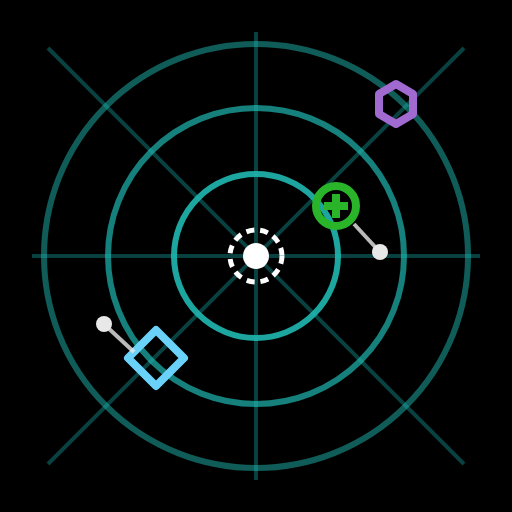
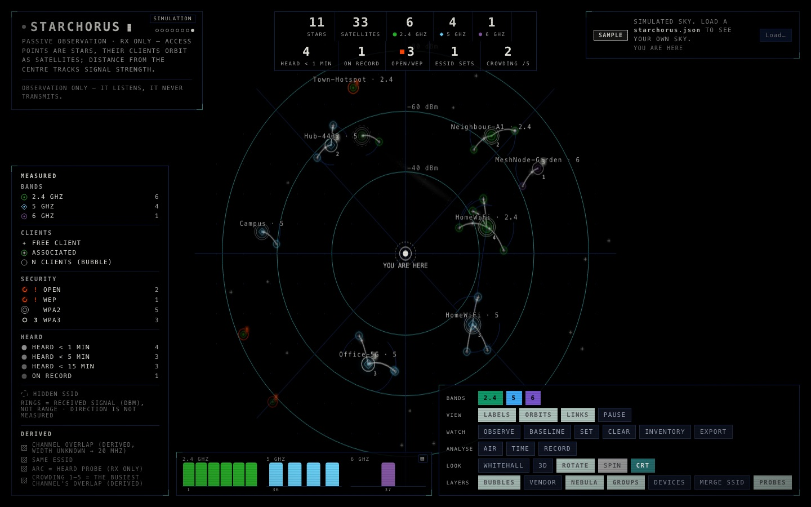
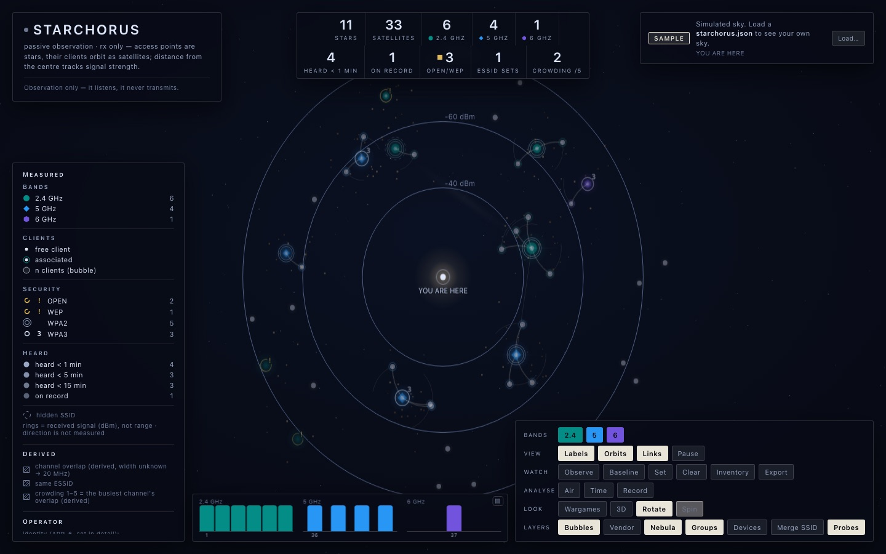
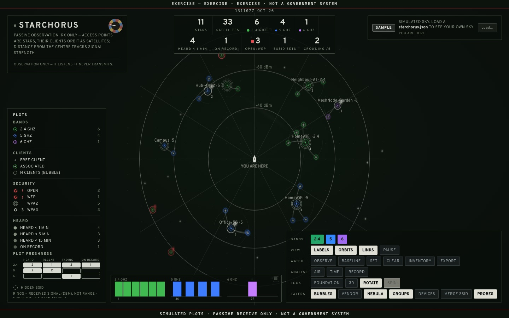
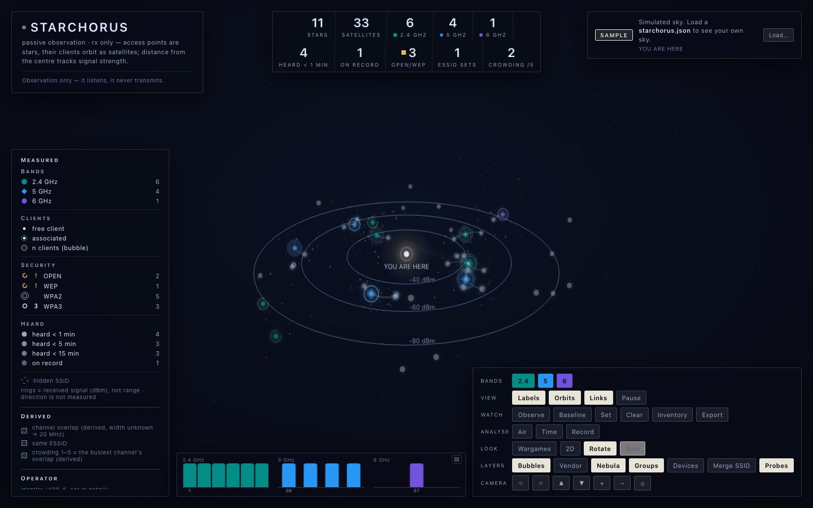

StarchorusEvery room you walk into is crowded with networks you cannot see. Starchorus lays them out as a sky that turns slowly about you, and every mark in it answers to a measurement.

Starchorus turns a Hak5 WiFi Pineapple Pager into an observatory. Access points are stars, their clients orbit as satellites, and the stronger the signal, the closer to the centre.
It listens and never transmits. No deauthentication, no injection, no association, no active scan: what can be learnt by listening is learnt by listening.
See it in your browser The source, on GitHubA collector on the Pager reads what is on the air anyway. A single page draws it, with nothing fetched from elsewhere and nothing sent anywhere.
Three looks, two and three dimensions; baseline comparison, inventory, air quality, signal over time, recording and replay, and a homing meter. Free software under the GPL, version 3 or later.



The Wi-Fi around your Mac, drawn in the same manner: every network within reach, its band, channel and strength, who shares the air with whom, and how all of it changes over the hour. A native macOS application, for the desk rather than the field.
Starchorus is at home in front of a camera. Its demonstration mode shows a convincing sky made of simulated data and placeholder names, and so discloses nothing about anyone: ready for on-set playback and screen graphics in film and television, as it stands.
Commercial licensing and production enquiries are welcome, through the 'Question or contact' form on GitHub.